Abstract
Entering adolescence signals the start of a crucial period for one's self-concept development. Previous literature has highlighted the involvement of social brain structures such as the medial prefrontal cortex and the temporoparietal junction in self-evaluations, as well as prosocial behavior. Self-concept, neural activation and prosocial behavior have been thoroughly studied in relation to age, but there is limited research on the involvement of puberty in this dynamic. One facet of prosocial behavior is social value orientation (SVO), a specific pattern for resource division between self and others.
The present paper investigated whether neural activation during a self-concept fMRI task mediated the relationship between puberty and social value orientation in an adolescent sample, measured longitudinally across three waves. Pubertal development has been operationalized as subjective and objective, making use of both a self-report tool and hormone measurements. As hypothesized, neural activation was observed in both the medial prefrontal cortex and the bilateral temporoparietal junction when comparing the direct self-evaluation condition to the control one. Interestingly, higher testosterone (indicative of more advanced pubertal development) was associated with more prosocial decision-making in the SVO task, but only in girls. The mediation hypothesis did not yield any significant findings. Yet, the current study provides evidence that puberty and hormones might be closely related to prosocial decision-making in adolescence while exploring a vastly under-researched topic.
Introduction
Adolescence is one of the most formative periods in one's development. Starting from the age of 10–11 years, children gradually become less dependent on their parents as their need for independence is growing.1 The increased contact with the environment beyond extended family settings allows adolescents to start broadening their identities and expanding their knowledge.2 Navigating increasingly complex social situations, such as peer interactions, requires adolescents to go through many developmental changes once they enter puberty. Being accepted by one's peers becomes very important, as adolescents start increasingly focusing on the opinions of those around them.3,4 Acquiring elevated social awareness skills thus allows adolescents to also explore their own sense of self as they become more aware of their uniqueness and distinctiveness.5
One key aspect that develops during adolescence is the self-concept, which is defined as the way someone perceives their own self. The process of constructing a coherent sense of self emerges during early adolescence, as children who enter puberty start exploring who they are and what their place in society is.6 One's personal self-concept is strongly related to their social self, as there is a great degree of integration of social and personal self-evaluations.7,8 Personal self-evaluations can be operationalized as direct or reflected.9,10 The former refers to the knowledge an individual has about themselves, while the latter represents the perceived knowledge and beliefs that others hold about the individual.
In the last two decades of social cognition research, a novel direction has been established, culminating with the discovery of a network called the 'social brain'.11,12 The Social Information Processing Network model postulates that processing social information is a result of different neural nodes interacting.13 More specifically, the cognitive-regulatory node is involved in perspective-taking and cognitive control and appears to display a linear developmental trajectory while contributing to self-concept maturation.14,15 Within this node, two important neural structures have been extensively studied in previous years, which provide evidence of a distinct neural circuitry involved in self-concept development.
Firstly, the medial prefrontal cortex (mPFC) is involved in direct self-evaluations, and in one's autobiographical memories.16–18 Previous findings attest to its crucial role related to the knowledge of both person-specific and general experiences in one's life. Several studies done on adolescent samples report elevated neural activity in the mPFC during tasks pertaining to one's direct self-evaluations compared to control conditions,19–21 with some evidence showing mPFC activation for direct self-evaluation increasing across three waves.7 Earlier research provides valuable information that supports these recent findings, as mPFC activation has been observed to be stronger when the domain was also more personally relevant to the participant.22
Secondly, the temporoparietal junction (TPJ) is a structure involved in perspective-taking as well as mentalizing, which refers to individuals perceiving and understanding their own intentions, thoughts and feelings, as well as others'.11 Moreover, the TPJ is crucial when engaging in direct versus reflected self-evaluations, alongside the mPFC.23 Such findings indicate the role of TPJ in differentiating between one's own thoughts and others', as well as reasoning about what others may think, and it further supports TPJ's involvement in perspective taking.
The mPFC and the TPJ thus represent valuable candidates for studying self-concept development in adolescence, which is why the present study aims to expand existing knowledge on this topic, specifically by understanding its role in relation to the broader scope of social behaviors. Interestingly, these two structures are also mentioned in previous literature when discussing the neural bases of prosocial behavior.24 Such behavior is related to social cognition, and it refers to various volitional acts meant to help, cooperate or share with, as well as comfort someone else.25 Reciprocal social relationships heavily rely on the display of prosocial behavior. Helping and trusting others are situations where one needs to consider someone else's intentions and thoughts. Considering the importance of peer relationships and inclusion within a group as defining characteristics for adolescence, prosocial behavior is therefore a key element to be investigated.
There is a considerable amount of knowledge pertaining to the fact that prosocial behavior changes throughout adolescence and early adulthood, with most studies on the topic reporting a general increase across adolescence.26,27 An example of prosocial behavior is giving behavior, where one distributes valuable resources between the self and someone else.28 One can display a steady preference for certain patterns of outcomes when having to divide resources between oneself and others.29 These preferences reflect a certain social value orientation (SVO) and they can be assessed using various economic games. One widely used option is the Triple Dominance Measure, a 9-item questionnaire that requires the participant to divide points between themselves and an unknown other.30 There are three answer options for each item, each corresponding to a different pattern of resource distribution. The Triple Dominance Measure was shown to possess noteworthy internal and construct validity, as well as outstanding stability and high reliability.31
Generally, most research about adolescence uses age as a predictor and there is a lack of insight into how puberty itself might influence both self-concept and prosocial behavior.32 Puberty marks the start of adolescence with a rise in gonadal hormones, which have a great impact upon brain development.33 The activation of multiple neuroendocrine systems kickstarts a complex brain remodeling process, with hormones such as testosterone and DHEA being involved in both the neural and the behavioral variations that arise in adolescence.34 Furthermore, the onset of puberty represents a pivotal moment as individuals change how they evaluate themselves by engaging in peer interaction more often than before.15 Such findings strongly suggest the involvement of puberty in the relationship between self-concept and prosocial behavior, but there are not enough studies that examine this topic in depth.
For the sake of obtaining a complete perspective upon puberty levels, it is useful to make a distinction between subjective and objective measures. One widely used subjective measure is the Pubertal Development Scale (PDS), which allows participants to assess how far along in puberty they are from a subjective point of view, while demonstrating good reliability.35 Self-reported data can be combined with objective measures of puberty, such as hormonal measurements, in order to provide a complete perspective on one's pubertal development. In the present study, this was achieved by conducting salivary testosterone and cortisol analyses.
Since self-knowledge has a clear neural signature when individuals evaluate their own traits,36 fMRI tasks can provide insight into the underlying mechanisms that guide complex behavior. In line with previous research, we expect neural activation in the medial prefrontal cortex and the bilateral temporoparietal junction during a direct self-evaluation task. Our main hypothesis states that neural activation in social brain areas mediates the link between puberty and social value orientation. Furthermore, we hypothesize that increased pubertal development will lead to more prosocial decision-making in the social value orientation task. To address these hypotheses, we've formulated three aims. First, the main aim of the current study is to investigate whether the association between puberty and social value orientation is partly explained (i.e. mediated) by neural activity during an fMRI self-evaluation task. Secondly, to study the nature of the relationship between puberty and social value orientation. Finally, we aim to examine the relationship between puberty and neural activity related to self-concept.
Methods
The Leiden Self-Concept study
The present study has made use of previously recorded data, collected during the Leiden Self-Concept project,37 a longitudinal study that consisted of three separate data collection timepoints, which will be referred to as waves. Participants completed various tasks and questionnaires, with those of interest for the present study displayed in Table 1 and Fig. A. Having access to three waves of data allowed for using puberty information from wave 1 as a predictor, neural data from wave 2 as a mediator and social value orientation data from wave 3 as the dependent variable.
Table 1 and Fig. A (an overview of the Leiden Self-Concept study's three waves) were not embedded as figures in the source document and are therefore omitted here, consistent with the original file.
Puberty
Subjective puberty data were collected from 160 participants (86 girls, 74 boys) during wave 1 via the Pubertal Development Scale (PDS),35 a questionnaire intended to obtain information about the physical changes specific to puberty. Four response options are given, each corresponding to either 1, 2, 3 or 4 points (from 'Has not yet begun to grow/Has not yet started changing' to 'Seems completed'). There is an additional option of 'I don't know', which corresponds to 0 points. Within this scale, the first three questions are unisex, pertaining to height growth, body hair growth and skin changes such as pimples. The following questions are split by sex, with two for boys and three for girls. The two questions that are boy-specific are related to the deepening of one's voice and facial hair growth; while the three questions for girls mention breast growth, the appearance of one's first period and how old they were at the time of their menarche. The 4-point scale remains the same for these last questions, except for the question about menstruation, where a 'Yes' is equal to 4 points and a 'No' corresponds to 1 point. The question about menarche asks for the age in years and does not have any points allocated to it. Total scores are computed by adding all points entered by a participant, with a maximum possible score of 20 points. The total score of each participant was used for all the analyses that included PDS.
As for objective puberty data, testosterone and cortisol levels were measured for 158 participants (85 girls, 73 boys) in morning saliva at wave 1.38 All samples were collected by passive drool, with the testosterone sample being collected before tooth brushing or having breakfast. An enzyme-linked immunoassay (ELISA) was used to assay the samples by ARU Biomarker Laboratory located in Cambridge, UK. Both hormones were measured in duplicate, with the lower detection limits being 4 pg/mL for testosterone and 0.03 µg/dL for cortisol. Intra- and interassay variability were 3.7% and 5.9% for testosterone, and 4.3% and 4.2% for cortisol.
Social value orientation (SVO)
Information about participants' prosocial decision-making was collected by using the Triple Dominance Measure, which targets social value orientation.30 146 participants (80 girls, 66 boys) completed this behavioral task at wave 3. They were asked to imagine themselves being paired with an unknown person that they would never meet, referred to as 'Other'. Participants were told that the Other will also be completing the same task, which entails circling one of three options, A – B – C, throughout 9 situations. The task asked participants to distribute coins between themselves and the Other. All participants were made aware that the more coins they accumulate for themselves, the better their own outcome; and vice versa for the Other. They were told there are no right or wrong answers, while being reminded that the coins are valuable. An example of an item in the Triple Dominance Measure looks like this:
| A | B | C | |
| (1) You get | 480 | 540 | 480 |
| Other gets | 80 | 280 | 480 |
Each situation thus offers the possibility of choosing between a prosocial choice (C), an individualistic choice (B) and a competitive choice (A). For each prosocial choice, 3 points were scored. An individualistic choice was worth 2 points, while a competitive one yielded 1 point. After participants had completed all nine items, all points were added up into a total score, used for all analyses involving SVO. The maximum score is 27 points and it would correspond to prosocial choices throughout all nine situations/items.
fMRI sample demographics
160 clinically healthy adolescent participants (86 girls, 74 boys) completed the self-concept fMRI task during the second wave. All participants were right-handed and had no neurological or psychiatric diagnoses. All participants had either normal or corrected-to-normal vision. 10 participants were excluded due to excessive head movements and technical issues. The final sample for all neural data analyses was thus made up of 150 participants with ages between 11 and 21 years, out of which 143 were born in the Netherlands. Participants born outside of the Netherlands were of either Dutch or European descent. 29 participants reported either one (n = 25) or both (n = 4) parents born outside of the Netherlands, with 58% of these parents being born in another European country. A report of each family's gross annual income was requested, with 6% of parents declining to disclose. Fifty families declared a gross annual income higher than €76,000, whereas 11 others disclosed earning less than €31,000 per year.
Informed consent was signed by all participants, as well as both parents in the case of minors, prior to inclusion in the study. Ethical approval was granted by the Medical Ethics Committee of the Leiden University Medical Centre (NL54510.058.16). All participants were screened for MRI contraindications, psychiatric diagnoses and medication use prior to the scan session. A radiologist examined all scans and no clinically relevant findings were reported.
fMRI task description
All participants underwent an fMRI task that included two runs, each consisting of two experimental conditions and one control condition. Only one experimental condition is of interest for the present study, namely the direct self-evaluation. Participants were asked to read short sentences describing various positive or negative traits that belonged to three domains: physical, academic or prosocial. Only the prosocial domain was of interest for the current study (Fig. B). Within each domain, 10 statements were positively nuanced, while the remaining 10 had a negative valence (e.g., 'I stand up for others' and 'I don't like to lend my things' respectively). Therefore, 20 sentences were shown per domain, with a total of 60 per run.
Throughout the direct self-evaluation task, participants were asked to point out the extent to which each trait sentence applied to themselves using a scale from 1 to 4 (from 'Not at all' to 'Completely'). The control condition required subjects to categorize various traits (e.g., 'Having beautiful eyes') according to 4 options: 1 – school, 2 – social, 3 – appearance, 4 – I don't know. Twenty trait sentences were shown in the control condition, distributed equally into positively and negatively nuanced. Everyone was able to indicate an answer by pressing 4 buttons reachable with their right hand, using all fingers except for their thumb.
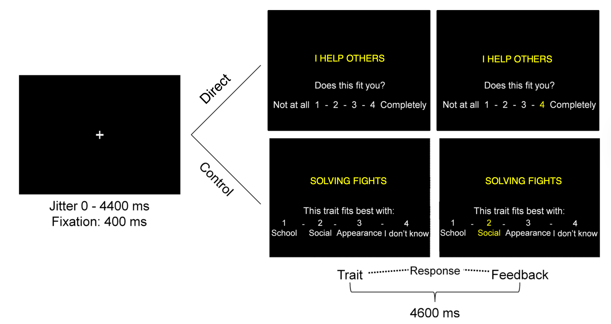
Within each run, the trials were pseudorandomized based on domains (physical, academic and prosocial). OptSeq was used for both the optimization of the trial order, as well as adding jittered intervals in between trials, which ranged from 0 to 4400 ms.39 A 400 ms fixation cross appeared at the beginning of each trial, after which the actual stimulus was displayed for 4600 ms. Subjects were able to respond to the sentence within this time frame and the number they chose turned yellow, indicating that their decision was successfully registered. When a subject failed to produce an answer within the allocated time frame, the screen would display the words 'Too late!' for a duration of 1000 ms. No late-response trials were included in any analyses.
fMRI data acquisition
All MRI scans were conducted using a Philips 3T MRI scanner and a standard whole-head coil attachment. Participants were able to watch a screen placed behind the scanner via a mirror attached to the head coil. Functional scans were acquired using T2*-weighted echo-planar imaging (EPI). TR was set to 2200 msec, TE was 30 msec, acquisition was sequential, with 37 slice sequences where each one measured 2.75 mm. FOV was 220 × 220 × 111.65 mm. The first two volumes were disposed of to account for T1 saturation. Once the functional data were collected, anatomical reference was obtained by means of a high-resolution T1-FFE 3D scan. The settings for this scan were TR shortest msec, TE at 4.6 msec, voxel size of 0.875 mm, 140 slices and a FOV of 224 × 178.5 × 168 mm.
fMRI preprocessing
SPM12 was used to analyze all collected data.40 All the following steps had already been realized and described in a previous paper.7 Differences in rigid body movement and slice-timing acquisition were considered and corrected for. Structural and functional volumes were all spatially normalized to T1 templates. The algorithm used for this normalization involved a 12-parameter affine transformation, as well as a nonlinear transformation related to cosine basis functions. Volumes were resampled to 3 mm cubic voxels. Functional volumes were spatially smoothed using a 6 mm FWHM isotropic Gaussian kernel.
To estimate neural activity, a model of the fMRI time series was constructed. Each event was considered as instantaneous (zero duration) and they were all convolved with the hemodynamic response function (HRF) to predict the observed BOLD signal. The events of interest modelled for the direct condition were 'Direct-Prosocial-Negative' and 'Direct-Prosocial-Positive'. The control condition had one event of interest modelled ('Control'), which was collapsed across valences and domains. Late-response trials were modelled as events of zero interest and they were used as covariates within a general linear model, alongside a basic set of cosine functions that served as high-pass filters. The model also included six motion regressors and the resulting contrast images were computed subject-by-subject and submitted to group analyses. Whole-brain activation patterns are visible in Fig. C.
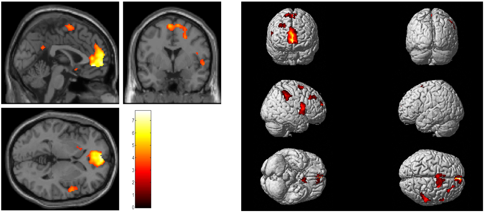
Following the whole-brain analyses, the MarsBaR toolbox41 was used to create three Region of Interest analyses (ROIs), which consisted of 8 mm spheres (Fig. D). These corresponded to the medial prefrontal cortex (x = −6, y = 50, z = 4), the right temporoparietal junction (x = −53, y = −59, z = 20) and the left temporoparietal junction (x = 56, y = −56, z = 18). These ROIs were based on research regarding 'the social brain' network and its functionality in perspective-taking11 and self-referential processing.20 Parameter estimates were then extracted from these analyses. Firstly, activation levels were calculated for all direct trials versus control trials. Secondly, activation for the Direct > Control contrast was correlated within each ROI.
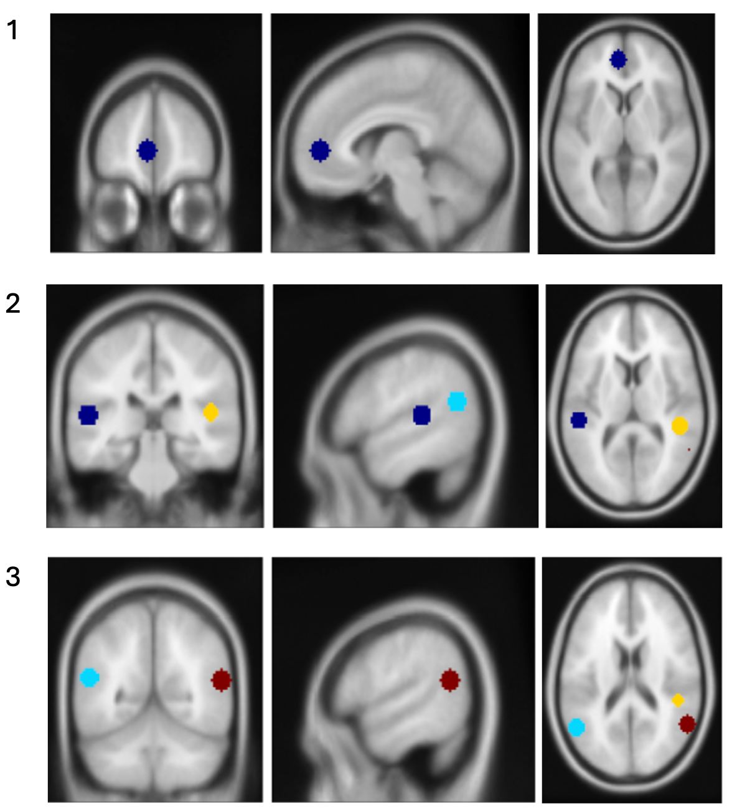
Statistical analyses
To achieve the first research aim, mediation models were conducted, in which the mPFC as well as the bilateral anterior and posterior TPJ activation served as mediators. Prior to performing the mediations, regression analyses were conducted to investigate the relationships between PDS, testosterone, cortisol, and SVO separately (aim 2). Conducting mediation models also allowed for the investigation of the direct relationship between puberty and self-concept-related neural activation (aim 3). The contrasts for left and right temporoparietal junctions were collapsed and averaged to reduce the number of mediation analyses. A total of 12 mediation models were conducted. The sample size varied depending on the type of analysis that was performed. Overall, 190 unique participants were observed across all data sources.
The age trajectories of subjective and objective puberty variables were investigated post hoc by calculating linear and quadratic effects. For these analyses, data from all three collection waves were considered. 189 participants were included (96 girls, 93 boys). Three plots were created, one for each measure of puberty (PDS, testosterone, cortisol).
Log transforms were applied to both testosterone and cortisol data to stabilize the variance, as hormonal markers are typically non-normally distributed.
All statistical analyses were performed using R Statistical Software.42 Mediation analyses were conducted using PROCESS,43 with indirect effects estimated using bootstrapping with 5000 resamples. An alpha level of .05 was used for all statistical tests, unless explicitly stated otherwise.
Results
Questionnaire & hormone data
PDS
The differences in pubertal development between boys and girls were assessed using data collected in the first timepoint (wave 1). Results show that girls (M = 15.05, SD = 3.55, n = 86) showed significantly higher PDS scores compared to boys (M = 13.47, SD = 4.59, n = 74); t(136.56) = −2.39, p = .018, d = −0.39. Fig. E displays the frequency distribution of PDS data from wave 1.
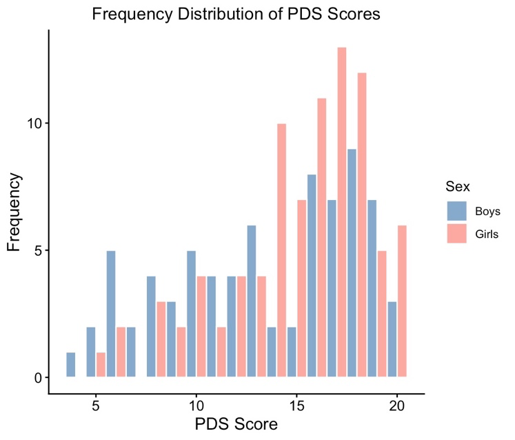
Hormone levels
We investigated sex differences in hormone levels as measured at wave 1 of data collection. The log-transformed testosterone mean for girls was 4.21 (SD = 0.38, n = 85 as per Table 2) and the mean for boys was 4.89 (SD = 0.72, n = 73 as per Table 3), with the original, back-transformed values available within the same tables. As expected, an independent samples t-test revealed that this difference in testosterone was significant, t(105.69) = 7.19, p < .001, with a large effect size of d = 1.20. Using log-transformed cortisol, we found that girls (M = −1.10, SD = 0.57, n = 85) had significantly higher cortisol levels than boys (M = −1.39, SD = 0.53, n = 73); t(155.1) = −3.32, p = .001, d = −0.53. Fig. F reveals that testosterone and cortisol distributions resemble a Gaussian distribution upon being log-transformed.
Table 2. Testosterone and Cortisol Descriptive Statistics for Girls in Wave 1
| Girls | n | M after log | SD after log | M original | SD original |
|---|---|---|---|---|---|
| Testosterone | 85 | 4.211 | 0.382 | 67.41 | 1.46 |
| Cortisol | 85 | −1.097 | 0.570 | 0.334 | 1.77 |
Table 3. Testosterone and Cortisol Descriptive Statistics for Boys in Wave 1
| Boys | n | M after log | SD after log | M original | SD original |
|---|---|---|---|---|---|
| Testosterone | 73 | 4.886 | 0.720 | 132.44 | 2.05 |
| Cortisol | 73 | −1.388 | 0.528 | 0.250 | 1.70 |
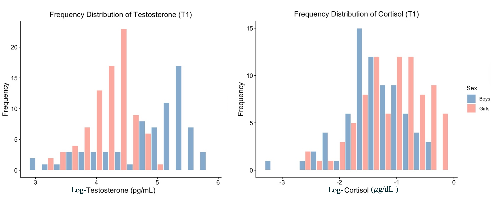
Post hoc analyses: Trajectories
PDS
To verify whether the puberty measures captured development consistent with existing literature, we tested linear and quadratic age trajectories for the subjective puberty variable, PDS. The sample included 96 girls and 93 boys across all three waves of collection. For PDS, both girls and boys show significant quadratic trajectories across age, as seen in Fig. G(a). Girls demonstrated a significant linear increase (b = 4.48, p < .001) and a significant negative quadratic effect (b = −0.116, p < .001), with the occurrence of a plateau around 19.2 years of age (R² = 0.51). Boys showed the same patterns with a significant linear effect (b = 5.09, p < .001) and a significant negative quadratic effect (b = −0.125, p < .001), although their plateau occurred later, at 20.4 years old (R² = 0.63).
Testosterone and cortisol
Linear and quadratic age effects were calculated for the objective measures of puberty, testosterone and cortisol levels. For testosterone, no linear or quadratic age-related effects were found for girls (b = 0.09, p = .46 and b = −0.001, p = .68 respectively). As for boys, they demonstrate a significant quadratic trajectory with a linear effect of b = 0.992 (p < .001) and a quadratic effect of b = −0.025 (p < .001). A steep rise can be observed in early adolescence, with a plateau around the age of 20 (Fig. G(b)). The sample size remains 189 (96 girls, 93 boys).
Finally, the same analyses for cortisol (n = 189) revealed no significant linear or quadratic trends for either girls or boys (all p > .26), suggesting that cortisol levels remain largely stable across adolescence in both sexes (Fig. G(c)).
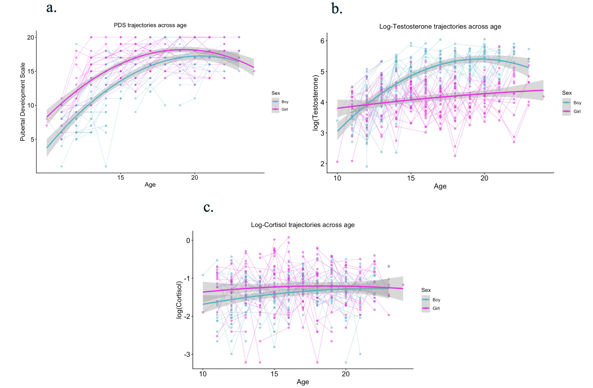
Within-subject stability and correlations
To test underlying associations and longitudinal stability, Spearman correlations were run between all puberty measures across waves. PDS showed strong stability across waves, with significant positive correlations between all three time points. Testosterone also demonstrated the same pattern of positive correlations across waves. Furthermore, testosterone at T1 was significantly correlated with PDS at T2 and T3. Testosterone at T2 demonstrated significant correlations with PDS from all three waves. Cortisol did not show cross-wave stability, with all correlations being non-significant except for one with testosterone at wave 2 (Fig. H).
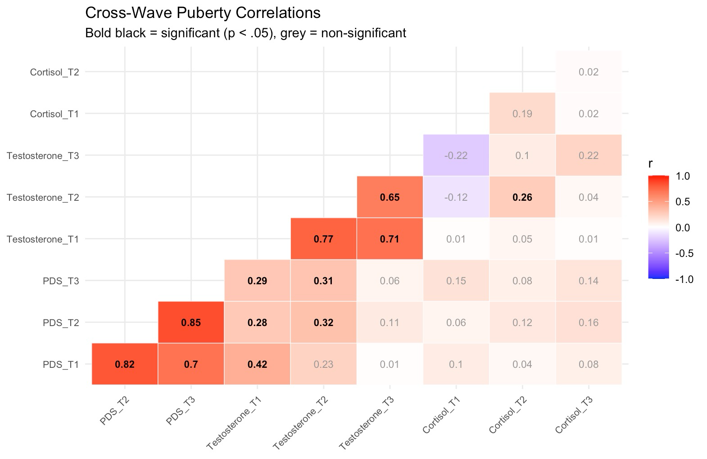
Predicting SVO based on pubertal development
We investigated social value orientation data collected at timepoint 3. The mean score on the SVO measure was M = 24.25 with an SD of 3.56 for a sample of n = 146 participants. Upon investigating SVO patterns based on sex, there were no significant differences between boys and girls, t(118.68) = −1.75, p = .082. The frequency distribution of SVO data and the cross-wave correlation matrix are available in Fig. I (a, b).
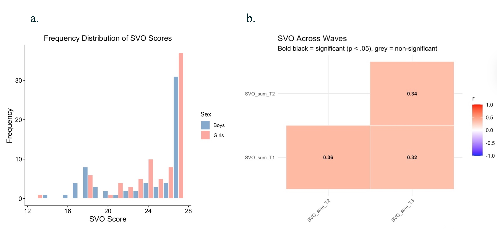
Regression analyses
Next, six linear regression models were run to examine the direct relationships between pubertal development and social value orientation (SVO). In all models, puberty variables measured during wave 1 were entered as predictors, while the sum of all nine SVO items at wave 3 served as the dependent variable. Age was entered as a covariate in all models. Given the pronounced sex differences in testosterone trajectories observed across waves, all models were run separately for boys and girls.44 All variables were standardized prior to the analyses to allow for comparing effect sizes across models. None of the three boys-only models yielded any significant findings. As for the girls-only models, one significant regression was found, namely the one involving testosterone (F(2, 76) = 3.844, p = .026). R² was 0.092, a medium effect size, thus indicating that testosterone at wave 1 explains approximately 9.2% of the variance in SVO observed in girls at wave 3. Therefore, higher testosterone within the girls-only sample at wave 1 is associated with more prosocial decision-making at wave 3. Results can be observed in Tables 4 and 5.
Table 4. Results of the 6 Regression Models. * = significant at the p < .05 threshold.
| Model | b predictor | b Age | R² | F | p |
|---|---|---|---|---|---|
| SVO ~ PDS + Age, girls only | 0.010, p = .947 | −0.109, p = .472 | 0.010 | 0.401 | .671 |
| SVO ~ Testosterone + Age, girls only | 0.307*, p = .009 | −0.130, p = .250 | 0.0919 | 3.844* | .026* |
| SVO ~ Cortisol + Age, girls only | −0.061, p = .607 | −0.079, p = .499 | 0.011 | 0.412 | .664 |
| SVO ~ PDS + Age, boys only | 0.037, p = .841 | 0.067, p = .716 | 0.010 | 0.323 | .725 |
| SVO ~ Testosterone + Age, boys only | 0.110, p = .554 | 0.004, p = .983 | 0.014 | 0.440 | .646 |
| SVO ~ Cortisol + Age, boys only | −0.029, p = .819 | 0.091, p = .460 | 0.009 | 0.288 | .750 |
Table 5. Sample Sizes for Each Regression Model
| Model | Sample size (n) |
|---|---|
| SVO ~ PDS + Age, girls only | 80 |
| SVO ~ Testosterone + Age, girls only | 79 |
| SVO ~ Cortisol + Age, girls only | 79 |
| SVO ~ PDS + Age, boys only | 66 |
| SVO ~ Testosterone + Age, boys only | 65 |
| SVO ~ Cortisol + Age, boys only | 65 |
Correlations
Next, Spearman correlations were run between the neural variables (mPFC, anterior TPJ, posterior TPJ) across all three waves (see Fig. J) to investigate temporal stability and consistency prior to using the ROIs as mediators. There were positive associations within waves, but not across waves (e.g., mPFC T1 – lrTPJa T1: r = 0.4 and mPFC T1 – lrTPJp T1: r = 0.51; p < .05 for both examples). Furthermore, within-wave correlations were conducted to investigate the relationships between all variables of interest within each data collection wave (Fig. K).
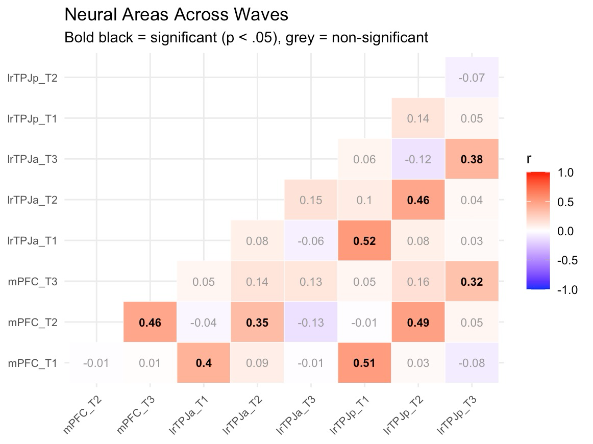
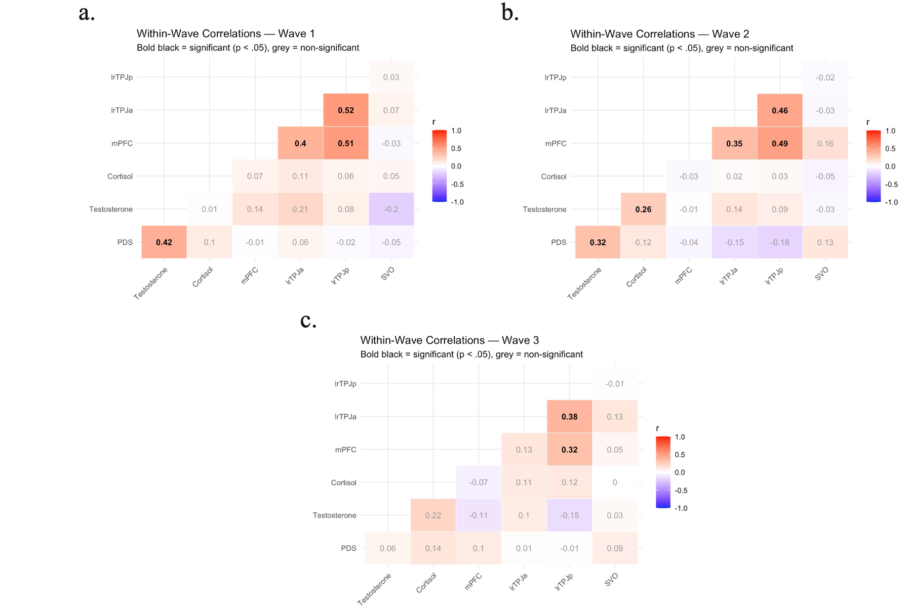
Mediation analyses
The main goal was to test whether neural activity at wave 2 mediated the relationship between pubertal development at wave 1 and social value orientation (SVO) at wave 3. In total, 12 separate mediation models were conducted to examine this hypothesis. Throughout all analyses, SVO was the outcome variable and age was controlled for. For both PDS and cortisol, models were run for girls and boys combined, with the medial prefrontal cortex (mPFC), the bilateral anterior temporoparietal junction (TPJa) and bilateral posterior temporoparietal junction (TPJp) as mediators respectively. Testosterone models were run separately for girls and boys, using the same three mediators.45 Bonferroni correction was applied, given the large number of tests. The resulting corrected alpha was thus α = 0.004, corresponding to 99.58% confidence intervals.
No significant results have been observed between neural activations in the regions of interest and SVO scores. Moreover, none of the 12 mediation models yielded a significant indirect effect, indicating that neural activity in the mPFC, TPJa or TPJp did not mediate the relationship between puberty variables and SVO. Interestingly, the direct effect of testosterone on SVO was consistently significant at an uncorrected threshold across all three girls-only models (b = 0.448, p = .012 for the mediation model involving mPFC; b = 0.452, p = .010 for the model involving anterior TPJ; b = 0.453, p = .010 for the model involving posterior TPJ). This is in line with the results of the aforementioned SVO ~ Testosterone regression model, and it suggests that the relationship between testosterone and SVO in girls may be direct, rather than mediated by neural activity. However, it should be noted that these direct effects do not survive the Bonferroni correction applied for multiple testing.
Mediation results and a visual representation of a general mediation model are available in Table 6 and Fig. L, respectively.
Table 6. Results of the 12 Mediation Models. * = significant at an uncorrected threshold of p < .05. Path A b = unstandardized effect of predictor on mediator; Path B b = unstandardized effect of mediator on outcome variable (SVO). Direct effect = effect of the predictor on the outcome variable while controlling for the mediator and age. Indirect effect = bootstrapped indirect effect (across 5000 samples), 95% confidence intervals are needed to interpret its significance. If 0 is contained within the confidence interval, this effect is not significant. The indirect effect represents the product of the Path A and Path B coefficients (b·b).
| Model | n | Predictor | Mediator | Path A b (p) | Path B b (p) | Direct effect (p) | Indirect effect [95% CI] |
|---|---|---|---|---|---|---|---|
| 1 | 145 | PDS | mPFC | −0.014 (.902) | 0.021 (.800) | 0.101 (.378) | 0.000 [−0.02, 0.03] |
| 2 | 146 | PDS | lrTPJa | −0.046 (.684) | −0.066 (.428) | 0.106 (.349) | 0.003 [−0.02, 0.04] |
| 3 | 146 | PDS | lrTPJp | −0.083 (.470) | −0.052 (.529) | 0.105 (.356) | 0.004 [−0.02, 0.04] |
| 4 | 143 | Cortisol | mPFC | 0.072 (.411) | 0.028 (.745) | −0.007 (.938) | 0.002 [−0.02, 0.03] |
| 5 | 144 | Cortisol | lrTPJa | 0.004 (.968) | −0.075 (.373) | 0.004 (.959) | 0.000 [−0.02, 0.02] |
| 6 | 144 | Cortisol | lrTPJp | 0.035 (.691) | −0.056 (.504) | 0.006 (.944) | −0.002 [−0.02, 0.02] |
| 7 (girls only) | 78 | Testosterone | mPFC | −0.079 (.689) | 0.048 (.638) | 0.448* (.012) | −0.004 [−0.08, 0.04] |
| 8 (girls only) | 79 | Testosterone | lrTPJa | −0.035 (.871) | −0.016 (.865) | 0.452* (.010) | 0.001 [−0.05, 0.02] |
| 9 (girls only) | 79 | Testosterone | lrTPJp | 0.014 (.937) | −0.032 (.776) | 0.453* (.010) | 0.000 [−0.06, 0.03] |
| 10 (boys only) | 65 | Testosterone | mPFC | −0.025 (.892) | 0.038 (.772) | 0.115 (.554) | −0.001 [−0.06, 0.05] |
| 11 (boys only) | 65 | Testosterone | lrTPJa | 0.023 (.885) | −0.152 (.331) | 0.118 (.542) | −0.004 [−0.07, 0.06] |
| 12 (boys only) | 65 | Testosterone | lrTPJp | −0.203 (.288) | −0.039 (.762) | 0.106 (.588) | 0.008 [−0.08, 0.09] |
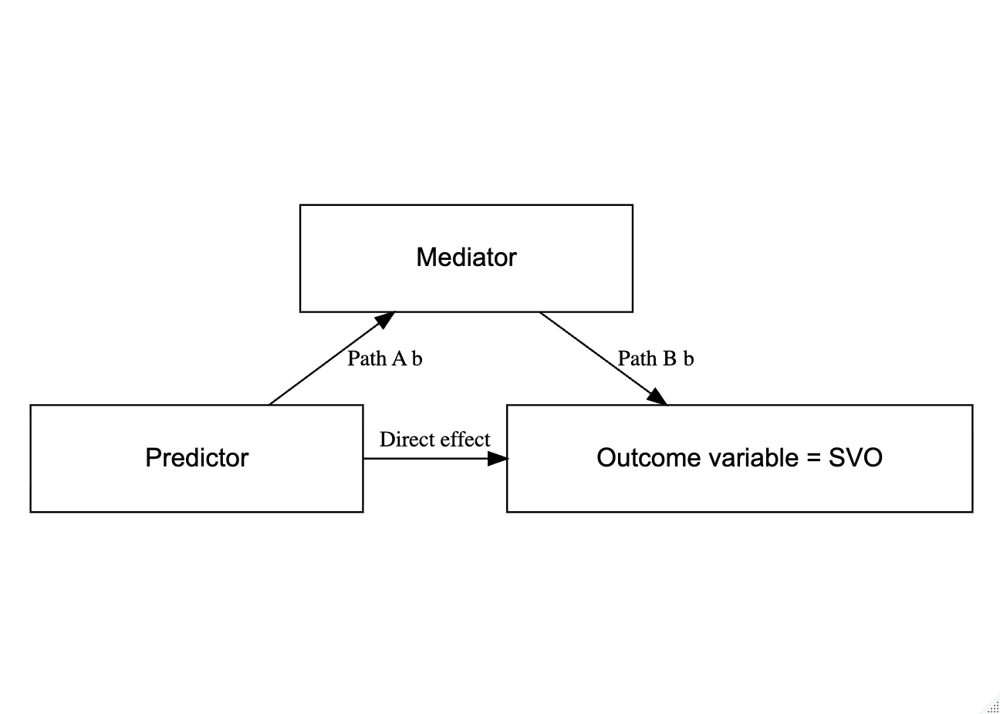
Discussion
The current study aimed to obtain more clarity regarding the relationship between puberty and social value orientation in an adolescent sample (11–21 years old), investigated across three timepoints.
fMRI results revealed neural activation related to the direct self-concept task in the medial prefrontal cortex (mPFC) and bilateral anterior and posterior temporoparietal junction (TPJa, TPJp), in accordance with previous research. The mPFC, bilateral TPJa and TPJp were included in the analyses as mediators, thus testing their involvement in the dynamic between puberty and SVO. Even though these regions were involved in thinking about the self, mediation analyses did not yield any significant indirect effects. As hypothesized, testosterone measurements at wave 1 significantly predicted variance in social value orientation (SVO) at wave 3, but only in girls. Linear regression results revealed no significant findings within the boys-only sample. Lastly, as opposed to our expectations, no significant associations were found between puberty and neural activity during the self-concept fMRI task. Together, these results suggest that the relation between puberty and social development is complex, and that different neural structures could most likely underlie it to some extent. The discussion is organized along the lines of these findings.
Mediation analyses
Social brain regions may have an important mediating role in understanding the relation between pubertal development and social value orientation. This hypothesis is based on prior research stating that the influence of puberty and its characteristic hormones might advance development in key social brain regions.33 The current study observed significant activity in the mPFC, as well as the bilateral TPJ when thinking about oneself. Specifically, fMRI analyses revealed similar patterns to those reported by other studies. Activation within the mPFC and the TPJ was observed when performing ROI analyses using the Direct > Control contrast, consistent with previous evidence.46 Such findings allow for interpreting the activity in these brain regions as a possible mechanism that explains pubertal development acting as a booster for social value orientation.
This study had the advantage of a three-way longitudinal design, which is the gold standard for testing mediations. This way, it was possible to test whether the relationship between pubertal development (wave 1) and social value orientation (wave 3) was mediated by brain activity (wave 2). Contrary to the expected results, none of the 12 mediation models yielded results that survived the multiple testing correction. Neural activation in the mPFC, TPJa and TPJp does not seem to mediate the relationship between puberty and social value orientation. The only statistically significant result was the direct effect of testosterone on SVO in girls, which had already been confirmed by performing regression analyses, but it did not survive the Bonferroni correction. One reason for the non-significant effects may be that there are several structures involved in the social brain network. Making a distinction between the subregions of the medial prefrontal cortex might have been crucial to finding a mediating role. The ventromedial prefrontal cortex (vmPFC) is argued to support functions such as social cognition while playing a role in judgments of oneself and others.47 Studies have investigated its involvement in self-related processing, with results suggesting it might be related to guiding one's choices and decisions.48 Moreover, the same study points towards the vmPFC being increasingly activated during self-evaluations when these are of personal importance.48 Pubertal development was also associated with increased differentiation between self and other in vmPFC, but only for the social domain.49 Such literature suggests that the inclusion of the vmPFC alongside puberty and self-evaluation in future research is appropriate. Lastly, the dorsolateral prefrontal cortex seems to be involved in perspective taking and domain differentiation, which could warrant its inclusion in future research investigating self-concept appraisal.24
The link between puberty and SVO
Testosterone
Consistent with the initial hypothesis, higher testosterone, reflecting more advanced pubertal development, was associated with more prosocial decision-making in adolescent girls. Despite mixed evidence, consensus among scientists based on prior research is that testosterone is linked to aggressive behavior.50 However, it might be the case that higher testosterone levels also encourage prosocial behavior, as it could be tied to status seeking. A study done on adolescent girls revealed that both pubertal development and testosterone were associated with costly decision-making meant to bring social status.51
It should be noted that the status interpretation is expected to be associated with social ties. However, within the Triple Dominance Measure, the person whom each participant had to distribute resources to was anonymous. Participants were told they would never meet this person, thus making a more prosocial decision in this task would not have brought any direct status benefits to the participant. They were not being observed or observing anyone else. It might therefore be the case that in the current study, status seeking is not the main mechanism to be considered when interpreting these results, because the design left no room for such motivations to occur. Alternatively, it is possible that girls experience more societal pressure aimed at exhibiting prosocial tendencies starting from childhood and continuing well into adolescence,52,53 and that this behavior is boosted by pubertal development. Evidence points out how women care more about the social context when completing giving tasks.54 This might also represent a possible explanation as to why social value orientation as a facet of prosocial behavior was significantly predicted in a girls-only sample, and not in boys.
In addition to testosterone, the current study also exploratively tested the role of cortisol. Despite consistency over time, this hormone was not correlated with any of the measures included in the design. To further discuss this result, more context about both testosterone and cortisol is needed. Cortisol is also associated with status seeking, with evidence suggesting it moderates the relationship between testosterone and seeking status. This pattern has been coined as the dual hormone hypothesis, according to which higher testosterone is associated with greater status seeking in adolescents, but only when cortisol is low.55 However, other scientists have been investigating a new line of research, according to which high testosterone levels and low cortisol levels are associated with prosocial behavior, specifically when this behavior confers status.56,57 In order to investigate status-seeking behavior, a specific study design is needed, such as the participant making their decisions after observing other peers being prosocial or not. Such a study revealed that adolescents with high testosterone and low cortisol displayed a significant increase in prosocial behavior upon observing another prosocial peer, with increased TPJ activation being documented.58 The current study did not investigate the interaction between testosterone and cortisol further than correlations, of which only one proved significant (during wave 2 of collection). Future research of the dual hormone hypothesis investigating its relevance for prosocial decision-making rather than status seeking might offer valuable input into the relationship between cortisol and testosterone in adolescence.
Alternatively, including altruism could prove relevant since it is defined as prosocial behavior that does not lead to personal gain. Prior research on altruism reveals no puberty-related changes, but a testosterone-related decrease in altruism in girls.59 Although not the same, social value orientation and altruism can both be considered dimensions of prosocial behavior.
PDS
This study included not only the objective assessment of puberty-related hormones, but also the subjective interpretation of puberty through the Pubertal Development Scale (PDS). PDS scores increased significantly with age in both boys and girls, and they were correlated with testosterone levels. However, the regressions involving PDS and social value orientation did not lead to any significant findings. There have only been a few studies examining the link between puberty and prosociality. These studies have found that pubertal timing interacts with gender when impacting prosocial behavior53 and that pubertal development leads to changes in the prosocial behavior of boys when controlling for age.60 Most of these studies mention behaviors such as altruism, giving to friends and charity. Puberty-related increases were reported when measuring giving and sharing to friends, peer and charity.59 However, the same study mentions that when investigating social value orientation, no puberty- or even age-related changes occur across adolescence.59 Such results indicate social value orientation could be more of a personality-dependent aspect of prosocial behavior, hence the stability across time and pubertal change. Previous literature supports this idea, although with caution, because there is limited research on how social value orientation and other personality traits relate to each other.61 In light of such existing research, the current null findings come to validate the idea that social value orientation is a stable trait that might not be impacted by puberty, but rather by hormones. Perhaps other facets of prosocial behavior are better suited to be investigated alongside puberty, as previous studies suggest.
The few papers that investigated puberty chose to split participants into categories rather than on a spectrum, the latter being the approach taken in the current paper. Including pubertal staging and timing might provide a clearer perspective on participants' status. Tanner staging could be particularly useful for this purpose, with 5 categories based on bodily changes in adolescents62 and literature in favor of this operationalization of puberty.53,63 Future papers could consider including both PDS and Tanner staging by physical exam. Dividing participants based on categories would also allow for comparisons between different levels of pubertal development and timing. It might be possible that a better reflection of prosocial behavior and more detailed puberty data will bring relevant results, which can subsequently help fill the knowledge gap about puberty and its implications in prosocial behavior.
Direct and reflected self-evaluations
The current study only investigated direct self-evaluations in adolescents. Future studies should consider including a reflected self-evaluation condition within their design. Interestingly, the most protracted brain development across adolescence is seen precisely in the mPFC and the TPJ.64 Neural specialization increases because of a prolonged period of gray matter loss.65 Similar developmental patterns have been observed for functional brain development. In early adolescents, the TPJ seems to be engaged in both direct and reflected self-evaluations. As they advance in age and head towards early adulthood, research shows this region becomes more specifically active for reflected self-evaluation.66 One hypothesis could be that during earlier adolescence, distinguishing one's true self-concept from the one shaped by their social environment is a struggle. That is, the skill of perspective-taking and switching between self- and others' views is not yet well-developed. Adolescents place a lot of importance on others' opinions and some beliefs they acquire might not necessarily reflect their own true self, therefore suggesting that direct and reflected self-concept can overlap. Self-concept formation continues across adolescence, as individuals discover what values they identify with, as well as the depth and dimensions of their own inner world. Upon reaching middle to late adolescence, individuals are less likely to superimpose group values upon their personal self-concept; and that would be compatible with evidence that TPJ eventually only becomes active during reflected self-evaluations.
As for the mPFC in adolescence, previous research has suggested more activation during direct self-evaluation as opposed to reflected.22 However, recent studies found patterns of activation that tend to overlap when contrasting direct and reflected self-evaluations.7 Such findings seem to suggest that as age increases, one's own perspectives might become increasingly aligned with the perceived perspectives of others. As adolescents get better at both knowing themselves and inferring what others think about them, more similar mPFC activity during direct and reflected self-evaluations might explain this alignment. In the stage of late adolescence, there is less reliance on constructing one's identity from the ground up by internalizing thoughts and values from peers. Possessing elevated self-awareness and a stable sense of self means one's own reflection coincides with the one experienced by others, without the latter being able to alter the former as much as it once could have.
Limitations and recommendations for future research
The present study had several strengths, including the longitudinal design, but also limitations that should be addressed in future research. The current study lacked dehydroepiandrosterone (DHEA) measurements, an important adrenal hormone released by the HPA axis. A surge in DHEA production occurs at adrenarche and levels continue to grow throughout adolescence, reaching their peak around 25–30 years of age.67 Research has suggested that DHEA and testosterone in girls might have a role in coordinating cognitive control with affective processes in the context of peer evaluation.68 Furthermore, positive associations were observed between DHEA and neural activity in social brain areas during a mentalizing task administered to adolescent girls.69
Literature suggests DHEA interacts with cortisol across multiple settings and throughout adolescence, but it is an under-researched topic.70 Future studies investigating self-concept in adolescence should include DHEA in order to investigate its effects on prosocial behavior. Moreover, estrogen and progesterone are two hormones that fluctuate across the menstrual cycle, which could be involved in prosocial decision-making and behavior. Previous literature reports that higher levels of social value orientation were observed in women who were in their mid-luteal phase, characterized by higher progesterone levels.71 Such findings suggest that women's social value orientation might vary depending on ovarian hormone levels and cycle stages. It would be very insightful to research whether such findings replicate in an adolescent sample, especially since menstrual cycle length can vary in the first years following menarche. A more comprehensive hormone measurement procedure would be ideal. The current study only included one sample per participant per wave. Hormone levels fluctuate, so the inclusion of DHEA and progesterone would require repeated measurements at different menstrual cycle stages in order to capture the full extent of hormonal variation.
The usage of the Triple Dominance Measure as an instrument to assess social value orientation could be considered a limitation. In this tool, the recipient of the resources is referred to as 'Other', a stranger whom the participant will never meet. There is no other context given to the participant. Evidence suggests this particular task might lack sensitivity for individual differences and proposes a better method, the SVO Slider Measure.72 This measure might be better suited for designs where no categorization is wanted, as it is able to produce a ratio-level dependent variable and the score distribution can be visualized by plotting angles. The Slider Measure is thus capable of successfully covering the gradation of preferences when it comes to social orientation. Moreover, this tool has been shown to demonstrate the highest test-retest reliability compared to its alternatives,73 very relevant in the context of longitudinal research.
Another aspect that the SVO Slider Measure might help address is the ceiling effect observed when investigating SVO tendencies at time point 3. When inspecting Fig. I(a), most participants achieved a score of 27 on the Triple Dominance Measure (n = 68), which means they adopted a prosocial decision-making style consistently across 9 situations. Ceiling effects are quite common in longitudinal research involving healthy participants,74 and if seen in a dependent variable like in this case, a study might yield null findings even though there is a real effect of the independent variable(s).75 A better SVO tool might help alleviate any ceiling effects and thus allow for capturing effects that might have been camouflaged. The SVO Slider Measure covers four different SVO orientations, as opposed to the Triple Dominance Measure, which only allows for three of them. We believe using the Slider Measure could thus prevent any ceiling effects in a future sample of healthy adolescents.
Lastly, literature reveals that the development and manifestation of giving behavior are impacted by different factors.76 The situational context matters, such as being observed by peers when dividing resources. Evidence suggests that giving during adolescence varies when other situational demands occur, namely resource allocation to another group increases when a participant is being observed or receives feedback.77 Consequently, using the SVO Slider Measure in future studies can lead to valuable information regarding how the context, framing and information given to participants affect their decision to divide resources between themselves and others.72 All these aspects point towards a credible potential of this tool to capture variability in SVO which arises as an effect of motivation and context cues.
Conclusion
The current study sought to investigate the mediating role of neural activation within social brain regions in the relationship between pubertal development and social value orientation. Although no evidence was observed for said mediating role of either mPFC or TPJ activity, testosterone was positively associated with social value orientation in girls. Such findings underscore the complexity of the relationship between puberty and prosocial decision-making. Future research should continue investigating the formation and characteristics of the self-concept during adolescence, with a focus on how it shapes prosocial decision-making and which neural structures support this process.
Acknowledgements
I'd like to thank my supervisors, Prof. Dr. Eveline Crone and Dr. Kayla Green. I am incredibly grateful for all the guidance and advice they've provided me with. I am thankful for being part of the GUTS010 and SYNClab teams, among whom I've felt welcome since the beginning of my internship. I also appreciate my family and friends for supporting me throughout these past two years.
All data used in this paper were collected within the Leiden Self-concept study.7 Data were made accessible thanks to Prof. Dr. Eveline Crone.
References
- Szwedo, D. E., Hessel, E. T., Loeb, E. L., Hafen, C. A., & Allen, J. P. (2017). Adolescent support seeking as a path to adult functional independence. Developmental Psychology, 53(5), 949–961. https://doi.org/10.1037/dev0000277
- Branje, S., De Moor, E. L., Spitzer, J., & Becht, A. I. (2021). Dynamics of Identity Development in Adolescence: A Decade in Review. Journal of Research on Adolescence, 31(4), 908–927. https://doi.org/10.1111/jora.12678
- Parker, J. G., Rubin, K. H., Erath, S. A., Wojslawowicz, J. C., & Buskirk, A. A. (2015). Peer Relationships, Child Development, and Adjustment: A Developmental Psychopathology Perspective. In Developmental Psychopathology (pp. 419–493). Wiley. https://doi.org/10.1002/9780470939383.ch12
- Vartanian, L. R. (2000). Revisiting the imaginary audience and personal fable constructs of adolescent egocentrism: a conceptual review. Adolescence, 35(140), 639–661.
- van Doeselaar, L., Becht, A. I., Klimstra, T. A., & Meeus, W. H. J. (2018). A Review and Integration of Three Key Components of Identity Development. European Psychologist, 23(4), 278–288. https://doi.org/10.1027/1016-9040/a000334
- Meeus, W., Van De Schoot, R., Keijsers, L., Schwartz, S. J., & Branje, S. (2010). On the Progression and Stability of Adolescent Identity Formation: A Five-Wave Longitudinal Study in Early-to-Middle and Middle-to-Late Adolescence. Child Development, 81(5), 1565–1581. https://doi.org/10.1111/j.1467-8624.2010.01492.x
- Van der Cruijsen, R., Peters, S., Zoetendaal, K. P. M., Pfeifer, J. H., & Crone, E. A. (2019). Direct and reflected self-concept show increasing similarity across adolescence: A functional neuroimaging study. Neuropsychologia, 129, 407–417. https://doi.org/10.1016/j.neuropsychologia.2019.05.001
- Crocetti, E., Prati, F., & Rubini, M. (2018). The Interplay of Personal and Social Identity. European Psychologist, 23(4), 300–310. https://doi.org/10.1027/1016-9040/a000336
- Baumeister, R. F. (1998). The self. In D. T. Gilbert, S. T. Fiske, & G. Lindzey (Eds.), The handbook of social psychology (4th ed., Vol. 1, pp. 680–740). McGraw-Hill.
- Fiske, S. T. (2004). The self: Social to the core. In C. Johnson & E. McKeever (Eds.), Social Beings: A Core Motives Approach to Social Psychology (2nd ed., pp. 177–224). John Wiley and Sons.
- Blakemore, S.-J. (2008). The social brain in adolescence. Nature Reviews Neuroscience, 9(4), 267–277. https://doi.org/10.1038/nrn2353
- Burnett, S., Sebastian, C., Cohen Kadosh, K., & Blakemore, S.-J. (2011). The social brain in adolescence: Evidence from functional magnetic resonance imaging and behavioural studies. Neuroscience & Biobehavioral Reviews, 35(8), 1654–1664. https://doi.org/10.1016/j.neubiorev.2010.10.011
- Nelson, E. E., Jarcho, J. M., & Guyer, A. E. (2016). Social re-orientation and brain development: An expanded and updated view. Developmental Cognitive Neuroscience, 17, 118–127. https://doi.org/10.1016/j.dcn.2015.12.008
- Crone, E. A., & Fuligni, A. J. (2020). Self and Others in Adolescence. Annual Review of Psychology, 71(1), 447–469. https://doi.org/10.1146/annurev-psych-010419-050937
- Pfeifer, J. H., & Peake, S. J. (2012). Self-development: Integrating cognitive, socioemotional, and neuroimaging perspectives. Developmental Cognitive Neuroscience, 2(1), 55–69. https://doi.org/10.1016/j.dcn.2011.07.012
- Lou, H. C., Luber, B., Crupain, M., Keenan, J. P., Nowak, M., Kjaer, T. W., Sackeim, H. A., & Lisanby, S. H. (2004). Parietal cortex and representation of the mental Self. Proceedings of the National Academy of Sciences, 101(17), 6827–6832. https://doi.org/10.1073/pnas.0400049101
- Ochsner, K. N., Beer, J. S., Robertson, E. R., Cooper, J. C., Gabrieli, J. D. E., Kihsltrom, J. F., & D'Esposito, M. (2005). The neural correlates of direct and reflected self-knowledge. NeuroImage, 28(4), 797–814. https://doi.org/10.1016/j.neuroimage.2005.06.069
- Svoboda, E., McKinnon, M. C., & Levine, B. (2006). The functional neuroanatomy of autobiographical memory: A meta-analysis. Neuropsychologia, 44(12), 2189–2208. https://doi.org/10.1016/j.neuropsychologia.2006.05.023
- Barendse, M. E. A., Cosme, D., Flournoy, J. C., Vijayakumar, N., Cheng, T. W., Allen, N. B., & Pfeifer, J. H. (2020). Neural correlates of self-evaluation in relation to age and pubertal development in early adolescent girls. Developmental Cognitive Neuroscience, 44, 100799. https://doi.org/10.1016/j.dcn.2020.100799
- Van Buuren, M., Walsh, R. J., Sijtsma, H., Hollarek, M., Lee, N. C., Bos, P. A., & Krabbendam, L. (2020). Neural correlates of self- and other-referential processing in young adolescents and the effects of testosterone and peer similarity. NeuroImage, 219, 117060. https://doi.org/10.1016/j.neuroimage.2020.117060
- Veroude, K., Jolles, J., Croiset, G., & Krabbendam, L. (2014). Sex differences in the neural bases of social appraisals. Social Cognitive and Affective Neuroscience, 9(4), 513–519. https://doi.org/10.1093/scan/nst015
- Pfeifer, J. H., Masten, C. L., Borofsky, L. A., Dapretto, M., Fuligni, A. J., & Lieberman, M. D. (2009). Neural Correlates of Direct and Reflected Self-Appraisals in Adolescents and Adults: When Social Perspective-Taking Informs Self-Perception. Child Development, 80(4), 1016–1038. https://doi.org/10.1111/j.1467-8624.2009.01314.x
- Pfeifer, J. H., Mahy, C. E. V., Merchant, J. S., Chen, C., Masten, C. L., Fuligni, A. J., Lieberman, M. D., Lessard, J., Dong, Q., & Chen, C. (2017). Neural systems for reflected and direct self-appraisals in Chinese young adults: Exploring the role of the temporal-parietal junction. Cultural Diversity & Ethnic Minority Psychology, 23(1), 45–58. https://doi.org/10.1037/cdp0000122
- Crone, E. A., Sweijen, S. W., Te Brinke, L. W., & Van De Groep, S. (2022). Pathways for engaging in prosocial behavior in adolescence. In Advances in Child Development and Behavior (Vol. 63, pp. 149–190). Elsevier. https://doi.org/10.1016/bs.acdb.2022.03.003
- Eisenberg, N., Spinrad, T. L., & Knafo-Noam, A. (2015). Prosocial development. In Handbook of child psychology (7th ed., pp. 610–656). Wiley.
- Do, K. T., Guassi Moreira, J. F., & Telzer, E. H. (2017). But is helping you worth the risk? Defining Prosocial Risk Taking in adolescence. Developmental Cognitive Neuroscience, 25, 260–271. https://doi.org/10.1016/j.dcn.2016.11.008
- Van Der Graaff, J., Carlo, G., Crocetti, E., Koot, H. M., & Branje, S. (2017). Prosocial Behavior in Adolescence: Gender Differences in Development and Links with Empathy. Journal of Youth and Adolescence, 47(5), 1086–1099. https://doi.org/10.1007/s10964-017-0786-1
- Cutler, J., & Campbell-Meiklejohn, D. (2019). A comparative fMRI meta-analysis of altruistic and strategic decisions to give. NeuroImage, 184, 227–241. https://doi.org/10.1016/j.neuroimage.2018.09.009
- Hu, X., Xu, Z., & Mai, X. (2017). Social value orientation modulates the processing of outcome evaluation involving others. Social Cognitive and Affective Neuroscience, 12(11), 1730–1739. https://doi.org/10.1093/scan/nsx102
- Van Lange, P. A. M., De Bruin, E. M. N., Otten, W., & Joireman, J. A. (1997). Development of prosocial, individualistic, and competitive orientations: Theory and preliminary evidence. Journal of Personality and Social Psychology, 73(4), 733–746. https://doi.org/10.1037/0022-3514.73.4.733
- Murphy, R. O., Ackermann, K. A., & Handgraaf, M. J. J. (2011). Measuring Social Value Orientation. Judgment and Decision Making, 6(8), 771–781. https://doi.org/10.1017/S1930297500004204
- Sebastian, C., Burnett, S., & Blakemore, S.-J. (2008). Development of the self-concept during adolescence. Trends in Cognitive Sciences, 12(11), 441–446. https://doi.org/10.1016/j.tics.2008.07.008
- Goddings, A., Beltz, A., Peper, J. S., Crone, E. A., & Braams, B. R. (2019). Understanding the Role of Puberty in Structural and Functional Development of the Adolescent Brain. Journal of Research on Adolescence, 29(1), 32–53. https://doi.org/10.1111/jora.12408
- Sisk, C. L., & Zehr, J. L. (2005). Pubertal hormones organize the adolescent brain and behavior. Frontiers in Neuroendocrinology, 26(3–4), 163–174. https://doi.org/10.1016/j.yfrne.2005.10.003
- Petersen, A. C., Crockett, L., Richards, M., & Boxer, A. (1988). A self-report measure of pubertal status: Reliability, validity, and initial norms. Journal of Youth and Adolescence, 17(2), 117–133. https://doi.org/10.1007/BF01537962
- Denny, B. T., Kober, H., Wager, T. D., & Ochsner, K. N. (2012). A Meta-analysis of Functional Neuroimaging Studies of Self- and Other Judgments Reveals a Spatial Gradient for Mentalizing in Medial Prefrontal Cortex. Journal of Cognitive Neuroscience, 24(8), 1742–1752. https://doi.org/10.1162/jocn_a_00233
- van der Cruijsen, R., Peters, S., van der Aar, L. P. E., & Crone, E. A. (2018). The neural signature of self-concept development in adolescence: The role of domain and valence distinctions. Developmental Cognitive Neuroscience, 30, 1–12. https://doi.org/10.1016/j.dcn.2017.11.005
- Toenders, Y. J., De Moor, M. H. M., Van Der Cruijsen, R., Green, K., Achterberg, M., & Crone, E. A. (2024). Within-person biological mechanisms of mood variability in childhood and adolescence. Human Brain Mapping, 45(11), e26766. https://doi.org/10.1002/hbm.26766
- Dale, A. M., Greve, D. N., & Burock, M. A. (1999). Optimal Stimulus sequences for Event-Related fMRI. Paper Presented at the 5th International Conference on Functional Mapping of the Human Brain.
- Tierney, T. M., Alexander, N. A., Ashburner, J., Avila, N. L., Balbastre, Y., Barnes, G., Bezsudnova, Y., Brudfors, M., Eckstein, K., Flandin, G., Friston, K., Jafarian, A., Kowalczyk, O. S., Litvak, V., Medrano, J., Mellor, S., O'Neill, G., Parr, T., Razi, A., … Zeidman, P. (2025). SPM 25: open source neuroimaging analysis software. Journal of Open Source Software, 10(110), 8103. https://doi.org/10.21105/joss.08103
- Brett, M., Anton, J. L., Valabregue, R., & Poline, J. B. (2002). Region of interest analysis using an SPM toolbox [abstract]. NeuroImage, 16(2).
- R Core Team. (2025). R: A Language and Environment for Statistical Computing. R Foundation for Statistical Computing. https://www.R-project.org/
- Hayes, A. F. (2022). Introduction to mediation, moderation, and conditional process analysis: A regression-based approach.
- Senefeld, J. W., Lambelet Coleman, D., Johnson, P. W., Carter, R. E., Clayburn, A. J., & Joyner, M. J. (2020). Divergence in Timing and Magnitude of Testosterone Levels Between Male and Female Youths. JAMA, 324(1), 99. https://doi.org/10.1001/jama.2020.5655
- Paus, T., Nawaz-Khan, I., Leonard, G., Perron, M., Pike, G. B., Pitiot, A., Richer, L., Susman, E., Veillette, S., & Pausova, Z. (2009). Sexual dimorphism in the adolescent brain: Role of testosterone and androgen receptor in global and local volumes of grey and white matter. Hormones and Behavior, 57(1), 63–75. https://doi.org/10.1016/j.yhbeh.2009.08.004
- Van Der Cruijsen, R., Blankenstein, N. E., Spaans, J. P., Peters, S., & Crone, E. A. (2023). Longitudinal self-concept development in adolescence. Social Cognitive and Affective Neuroscience, 18(1), nsac062. https://doi.org/10.1093/scan/nsac062
- Delgado, M. R., Beer, J. S., Fellows, L. K., Huettel, S. A., Platt, M. L., Quirk, G. J., & Schiller, D. (2016). Viewpoints: Dialogues on the functional role of the ventromedial prefrontal cortex. Nature Neuroscience, 19(12), 1545–1552. https://doi.org/10.1038/nn.4438
- D'Argembeau, A. (2013). On the Role of the Ventromedial Prefrontal Cortex in Self-Processing: The Valuation Hypothesis. Frontiers in Human Neuroscience, 7. https://doi.org/10.3389/fnhum.2013.00372
- Pfeifer, J. H., Kahn, L. E., Merchant, J. S., Peake, S. J., Veroude, K., Masten, C. L., Lieberman, M. D., Mazziotta, J. C., & Dapretto, M. (2013). Longitudinal Change in the Neural Bases of Adolescent Social Self-Evaluations: Effects of Age and Pubertal Development. The Journal of Neuroscience, 33(17), 7415–7419. https://doi.org/10.1523/JNEUROSCI.4074-12.2013
- Geniole, S. N., Bird, B. M., McVittie, J. S., Purcell, R. B., Archer, J., & Carré, J. M. (2020). Is testosterone linked to human aggression? A meta-analytic examination of the relationship between baseline, dynamic, and manipulated testosterone on human aggression. Hormones and Behavior, 123, 104644. https://doi.org/10.1016/j.yhbeh.2019.104644
- Cardoos, S. L., Ballonoff Suleiman, A., Johnson, M., Van Den Bos, W., Hinshaw, S. P., & Dahl, R. E. (2017). Social status strategy in early adolescent girls: Testosterone and value-based decision making. Psychoneuroendocrinology, 81, 14–21. https://doi.org/10.1016/j.psyneuen.2017.03.013
- Brody, L. R., & Hall, J. A. (1993). Gender and emotion. In Handbook of Emotions (pp. 447–460). Guilford Press.
- Carlo, G., Crockett, L. J., Wolff, J. M., & Beal, S. J. (2012). The Role of Emotional Reactivity, Self-regulation, and Puberty in Adolescents' Prosocial Behaviors. Social Development, 21(4), 667–685. https://doi.org/10.1111/j.1467-9507.2012.00660.x
- Espinosa, M. P., & Kovářík, J. (2015). Prosocial behavior and gender. Frontiers in Behavioral Neuroscience, 9. https://doi.org/10.3389/fnbeh.2015.00088
- Cima, M., Meulenbeek, K., Spagnuolo, F., Oosterink, F., Thijssen, S., Smeijers, D., Valenzuela Pascual, C., Mouratidis, A., Oosterling, M., Riem, M., & Loheide-Niesmann, L. (2025). A systematic review of the relationship between cortisol, testosterone, and aggression in children and adolescents. Aggression and Violent Behavior, 82, 102051. https://doi.org/10.1016/j.avb.2025.102051
- Knight, E. L., Sarkar, A., Prasad, S., & Mehta, P. H. (2020). Beyond the challenge hypothesis: The emergence of the dual-hormone hypothesis and recommendations for future research. Hormones and Behavior, 123, 104657. https://doi.org/10.1016/j.yhbeh.2019.104657
- Prasad, S., Knight, E. L., & Mehta, P. H. (2019). Basal testosterone's relationship with dictator game decision-making depends on cortisol reactivity to acute stress: A dual-hormone perspective on dominant behavior during resource allocation. Psychoneuroendocrinology, 101, 150–159. https://doi.org/10.1016/j.psyneuen.2018.11.012
- Duell, N., Van Hoorn, J., McCormick, E. M., Prinstein, M. J., & Telzer, E. H. (2021). Hormonal and neural correlates of prosocial conformity in adolescents. Developmental Cognitive Neuroscience, 48, 100936. https://doi.org/10.1016/j.dcn.2021.100936
- Sweijen, S. W., Te Brinke, L. W., Van De Groep, S., & Crone, E. A. (2025). A Longitudinal Study of Multidimensional Prosocial Behavior During Adolescence. Child Development, 96(6), 1946–1967. https://doi.org/10.1111/cdev.70009
- Ahmed, S., Foulkes, L., Leung, J. T., Griffin, C., Sakhardande, A., Bennett, M., Dunning, D. L., Griffiths, K., Parker, J., Kuyken, W., Williams, J. M. G., Dalgleish, T., & Blakemore, S. J. (2020). Susceptibility to prosocial and antisocial influence in adolescence. Journal of Adolescence, 84(1), 56–68. https://doi.org/10.1016/j.adolescence.2020.07.012
- Bogaert, S., Boone, C., & Declerck, C. (2008). Social value orientation and cooperation in social dilemmas: A review and conceptual model. British Journal of Social Psychology, 47(3), 453–480. https://doi.org/10.1348/014466607X244970
- Tanner, J. M. (1962). Growth at adolescence (2nd ed.). Blackwell Scientific Publications.
- Dorn, L. D., Dahl, R. E., Woodward, H. R., & Biro, F. (2006). Defining the Boundaries of Early Adolescence: A User's Guide to Assessing Pubertal Status and Pubertal Timing in Research With Adolescents. Applied Developmental Science, 10(1), 30–56. https://doi.org/10.1207/s1532480xads1001_3
- Mills, K. L., Lalonde, F., Clasen, L. S., Giedd, J. N., & Blakemore, S.-J. (2014). Developmental changes in the structure of the social brain in late childhood and adolescence. Social Cognitive and Affective Neuroscience, 9(1), 123–131. https://doi.org/10.1093/scan/nss113
- Casey, B., Tottenham, N., Liston, C., & Durston, S. (2005). Imaging the developing brain: what have we learned about cognitive development? Trends in Cognitive Sciences, 9(3), 104–110. https://doi.org/10.1016/j.tics.2005.01.011
- Carter, R. M., & Huettel, S. A. (2013). A nexus model of the temporal–parietal junction. Trends in Cognitive Sciences, 17(7), 328–336. https://doi.org/10.1016/j.tics.2013.05.007
- Young, D. G., Skibinski, G., Mason, J. I., & James, K. (1999). The influence of age and gender on serum dehydroepiandrosterone sulphate (DHEA-S), IL-6, IL-6 soluble receptor (IL-6 sR) and transforming growth factor beta 1 (TGF-beta1) levels in normal healthy blood donors. Clinical and Experimental Immunology, 117(3), 476–481. https://doi.org/10.1046/j.1365-2249.1999.01003.x
- Pelletier-Baldelli, A., Sheridan, M. A., Rudolph, M. D., Eisenlohr-Moul, T., Martin, S., Srabani, E. M., Giletta, M., Hastings, P. D., Nock, M. K., Slavich, G. M., Rudolph, K. D., Prinstein, M. J., & Miller, A. B. (2024). Brain network connectivity during peer evaluation in adolescent females: Associations with age, pubertal hormones, timing, and status. Developmental Cognitive Neuroscience, 66, 101357. https://doi.org/10.1016/j.dcn.2024.101357
- Goddings, A., Burnett Heyes, S., Bird, G., Viner, R. M., & Blakemore, S. (2012). The relationship between puberty and social emotion processing. Developmental Science, 15(6), 801–811. https://doi.org/10.1111/j.1467-7687.2012.01174.x
- Kamin, H. S., & Kertes, D. A. (2017). Cortisol and DHEA in development and psychopathology. Hormones and Behavior, 89, 69–85. https://doi.org/10.1016/j.yhbeh.2016.11.018
- Wang, J.-X., Zhuang, J.-Y., Fu, L., & Lei, Q. (2021). Social Orientation in the Luteal Phase: Increased Social Feedback Sensitivity, Inhibitory Response, Interpersonal Anxiety and Cooperation Preference. Evolutionary Psychology, 19(1), 1474704920986866. https://doi.org/10.1177/1474704920986866
- Murphy, R. O., & Ackermann, K. A. (2014). Social Value Orientation: Theoretical and Measurement Issues in the Study of Social Preferences. Personality and Social Psychology Review, 18(1), 13–41. https://doi.org/10.1177/1088868313501745
- Bakker, D. M., & Dijkstra, J. (2021). Comparing the Slider Measure of Social Value Orientation with Its Main Alternatives. Social Psychology Quarterly, 84(3), 235–245. https://doi.org/10.1177/01902725211008938
- Haqiqatkhah, M. M. (2025, May 23). Floor and ceiling effects. MATILDA Preprints.
- Lewis-Beck, M. S., Bryman, A., & Futing Liao, T. (2004). Ceiling Effect. In M. S. Lewis-Beck, A. Bryman, & T. Futing Liao (Eds.), The SAGE Encyclopedia of Social Science Research Methods. Sage Publications, Inc. https://doi.org/10.4135/9781412950589.n102
- Crone, E. A., & Achterberg, M. (2022). Prosocial development in adolescence. Current Opinion in Psychology, 44, 220–225. https://doi.org/10.1016/j.copsyc.2021.09.020
- van Hoorn, J., Fuligni, A. J., Crone, E. A., & Galván, A. (2016). Peer influence effects on risk-taking and prosocial decision-making in adolescence: insights from neuroimaging studies. Current Opinion in Behavioral Sciences, 10, 59–64. https://doi.org/10.1016/j.cobeha.2016.05.007